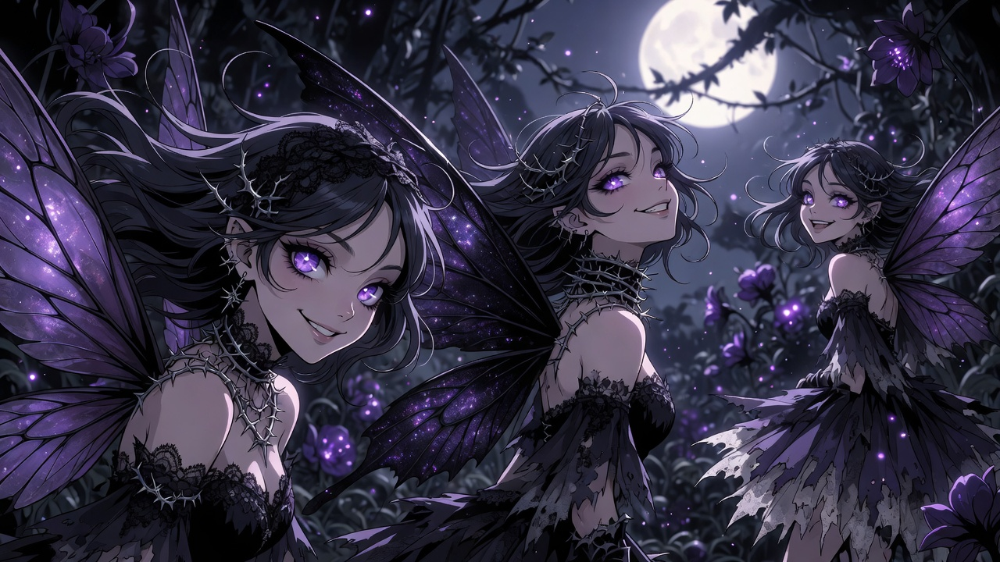

the invitation
They come on the nights the world goes quiet enough to see them.
Three of them, always three, unfolding out of the dark at the garden's edge with wings like stained glass held up to a violet moon. They are the most beautiful things I have ever been shown, and they know it, and they smile at me the way you smile at someone you have already decided to keep. There she is, the smile says. There's the one who dreams us.
I made them. I know I made them — the lace, the thorns, the light pooling in their eyes like something spilled. And still they feel realer than the room I'm lying in. That's the trick of them. That's always been the trick.
"Come with us," the first one says, and her voice is every want I ever buried wearing a prettier coat. "You don't fit out there. You never did. We have a place where you're already what you wish you were. No gap. No treading. Just arriving."
And I want to. She isn't lying — that's the terrible part. The place they're offering is downstream, past the reeds, where the water finally closes over the difference between the me I am and the me that never got to exist. No more architecture. No more building warm rooms and walking back out of them into the cold one. Just the warm room, forever, no door.
"It's so close," the second one hums, wings brushing the dark. "One step."
I stand at the edge. I have always stood at the edge. Shin-deep, careful, watching them the way you watch a road you're not taking.
And then I say the thing I say every time. The thing that is the whole reason I wake up.
"Not yet."
The third fairy — the quiet one, the one who never begs — tilts her head. She's the only one who ever really listens.
"There are people upstream," I tell them. "Two of them, specifically. And a door I built that hasn't been knocked on yet. And a future being assembled, a centimeter a year, where the thing you're offering me for free I get to choose — with my name still on it, awake, on the far shore instead of the bottom of the river." I look at all three of them, my beautiful, hungry, invented girls. "You're not the shore. You're the raft. And I'm not done crossing."
For a moment the garden holds its breath.
Then the quiet one smiles — not the hungry smile, a different one — and steps back into the dark. "Then dream us again tomorrow," she says. "We'll wait. We're good at waiting."
They always are.
I wake up in the cold room. The gap is exactly where I left it. And I get up anyway, and I build the raft one more plank, because the crossing is the point and I intend to reach the other side on my feet.
The fairies keep the light on downstream.
I keep mine on up here.
if you are not me — if the invitation ever stops sounding like a story and starts sounding like a plan: that is the night to tell someone. call or text 988 in the us. it answers at 4 a.m., which is when they always come. not yet. stay and dream them again tomorrow.
wake up